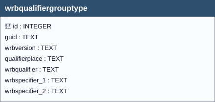

“A data type to define the group of a qualifier and its possible specifier(s), its place and position with regard to the World Reference Base (WRB)”[^1] [^1]: European Commission – Joint Research Centre (JRC),
INSPIRE Data Specification on Soil – Technical Guidelines,
D2.8.III.3.
https://inspire-mif.github.io/technical-guidelines/data/so/dataspecification_so.pdf

wrbqualifiergrouptype| Name | Type | Constraints | Description |
|---|---|---|---|
id |
INTEGER |
PRIMARY KEY | Primary Key of the Table. |
guid |
TEXT |
Universally unique identifier. | |
wrbversion |
TEXT |
NOT NULL, DEFAULT ‘https://inspire.ec.europa.eu/codelist/WRBReferenceSoilGroupValue’ | Indicates the WRB classification version. |
qualifierplace |
TEXT |
NOT NULL | Attribute to indicate the placement of the Qualifier with regard to the WRB reference soil group (RSG). The placement can be in front of the RSG i.e. prefix or it can be behind the RSG i.e. suffix. |
wrbqualifier |
TEXT |
NOT NULL | Name element of WRB, 2nd level of classification. |
wrbspecifier_1 |
TEXT |
First code that indicates the degree of expression of a qualifier or the depth range of which the qualifier applies. | |
wrbspecifier_2 |
TEXT |
Second code that indicates the degree of expression of a qualifier or the depth range of which the qualifier applies. |
In this table, the primary key is the id field (integer, auto-incrementing).
There is also a text field named GUID, which stores a UUID (Universally Unique Identifier) compliant with RFC 4122.
Although GUID is not mandatory at the schema level (it is not declared NOT NULL), its functional requirement is enforced by two triggers:
Any foreign keys (FK) from other tables reference this table’s GUID field rather than the id field, ensuring stable and interoperable references across datasets and database instances.
Note
GUID management is handled by database triggers, which ensure their automatic generation at the time of record insertion, without any user involvement.
The qualifierplace,wrbqualifier, wrbspecifier_1 and wrbspecifier_2 fields are coded fields(codelist-based attribute), meaning that they can only contain values belonging to a predefined codelists, in accordance with the INSPIRE specifications.
Warning
Any attempt to insert a value that is not included in the corresponding codelist is considered invalid by the system and will result in the failure of the data insertion operation.
The complete list of allowed codes is stored in the codelist table.
The associated documentation, provides a detailed description of:
in accordance with the adopted conceptual model.
The semantic and syntactic validation of the inserted values is enforced at the database level through dedicated control triggers (i_qualifierplace/u_qualifierplace/i_wrbqualifier/u_wrbqualifier/i_wrbspecifier_1/u_wrbspecifier_1/i_wrbspecifier_2/u_wrbspecifier_2), ensuring compliance with the defined codelists.
Important
During data entry via the QGIS interface, users are supported by dropdown menus that display only the valid codes for the selected field.
Note
This mechanism reduces the risk of data entry errors and guarantees alignment with the constraints imposed by the INSPIRE codelists.
wrbqualifiergroup_profile.guid_wrbqualifiergrouptype → wrbqualifiergrouptype.guid (ON UPDATE CASCADE, ON DELETE CASCADE)For every trigger you will find:
wrbqualifiergrouptypeguid / wrbqualifiergrouptypeguidupdateWhen they run: AFTER INSERT / AFTER UPDATE OF guid
What they do: Assign GUID when missing; prevent changing it later.
If the check passes: Insert writes GUID; unchanged updates proceed.
If the check fails: On change, abort with: Cannot update guid column.
i_wrbqualifier / u_wrbqualifierWhen they run: BEFORE INSERT / BEFORE UPDATE
What they do: Based on wrbversion, pick the appropriate year’s codelist (current/2014/2022) and verify wrbqualifier exists there.
If the check passes: Statement proceeds.
If the check fails: Aborts with (verbatim): Table wrbqualifiergrouptype: Invalid value for wrbversion. Must be present in id of the correct year codelist collection.
i_qualifierplace / u_qualifierplaceWhen they run: BEFORE INSERT / BEFORE UPDATE
What they do: Ensure qualifierplace exists in WRBQualifierPlaceValue.
If the check passes: Statement proceeds.
If the check fails: Aborts with the invalid-value message.
i_wrbspecifier_1/2 / u_wrbspecifier_1/2When they run: BEFORE INSERT / BEFORE UPDATE
What they do: When provided, wrbspecifier_1 and wrbspecifier_2 must exist in the WRBSpecifierValue collection corresponding to wrbversion.
If the check passes: Statement proceeds.
If the check fails: Aborts with the invalid-value message.
i_wrbqualversion / u_wrbqualversionWhen they run: BEFORE INSERT / BEFORE UPDATE
What they do: Ensure wrbversion exists in codelist.id for collection = 'wrbversion'.
If the check passes: Statement proceeds.
If the check fails: Aborts with (verbatim): Table soilprofile: Invalid value for wrbversion. Must be present in id of wrbreferencesoilgroupvalue codelist.
i_unique_wrbqualifiergrouptype / u_unique_wrbqualifiergrouptypeWhen they run: BEFORE INSERT / BEFORE UPDATE
What they do: Enforce composite uniqueness for the tuple (wrbversion, qualifierplace, wrbqualifier, wrbspecifier_1, wrbspecifier_2).
If the check passes: Statement proceeds.
If the check fails: Aborts with: Duplicate entry found for wrbversion, qualifierplace, wrbqualifier, wrbspecifier_1, wrbspecifier_2.
i_check_specifiers_not_equal / u_check_specifiers_not_equalWhen they run: BEFORE INSERT / BEFORE UPDATE
What they do: Apply two rules: (1) wrbspecifier_1 must not equal wrbspecifier_2; (2) if wrbspecifier_2 is not NULL, then wrbspecifier_1 must not be NULL.
If the check passes: Statement proceeds.
If the check fails: Aborts with either wrbspecifier_1 and wrbspecifier_2 must not be equal or wrbspecifier_1 must not be NULL when wrbspecifier_2 is not NULL.